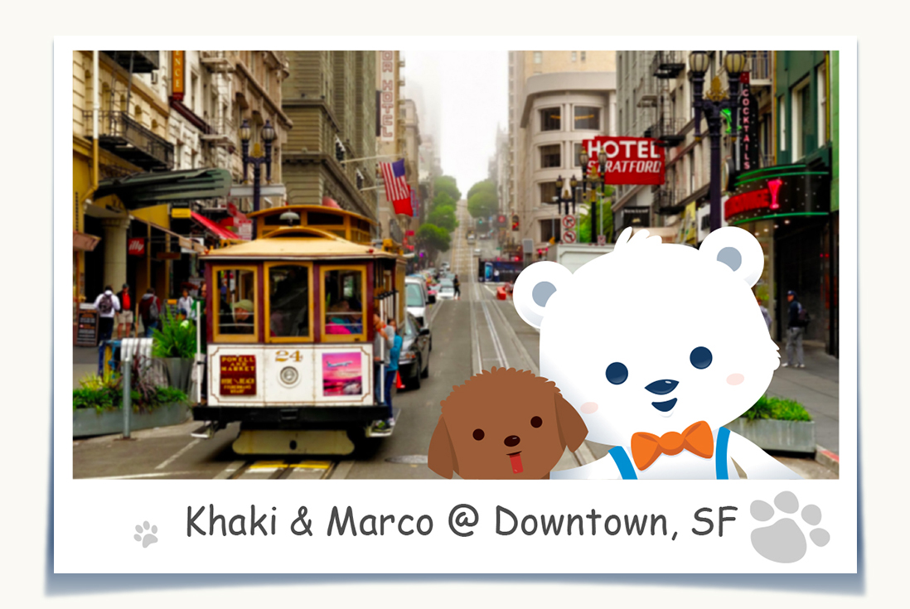
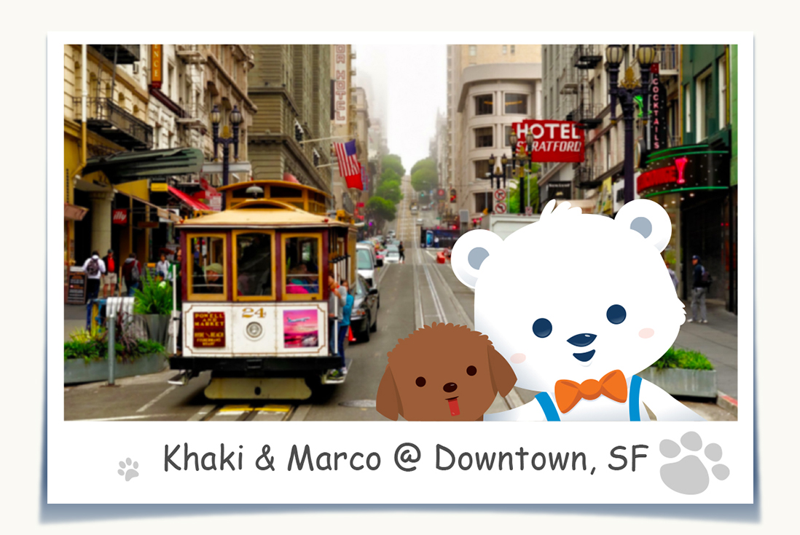

August 23, 2015
 By
By
Marco Bear  I love San Francisco! I had so much fun and went to so many beautiful places. First, me and Khaki checked out the California Academy of Sciences in Golden Gate park, I saw insects and bugs from all over the world, they even had an albino crocodile! When we were done we walked across the park to check out the De Young museum. we saw cool sculptures and famous paintings that I will never forget. After that we went back to my friends house and we went out to eat at a hamburger place called In N' Out, it was SO good. I'd have to say my favorite part of San Francisco was the Golden Gate bridge. Me and Khaki walked across the golden gate bridge and back! The golden gate bridge is this huge orange bridge in the city, you can see from all over san francisco. There's so much to see in this city! I also really liked Angel island. It's an island where a lot of Chinese immigrants stayed when first coming to America. It had nice hikes and great views of the city. I'd love to come back to San Francisco and meet more interesting people, eat more delicious food and see more beautiful places!
San Francisco
ByMarco Bear  I love San Francisco! I had so much fun and went to so many beautiful places. First, me and Khaki checked out the California Academy of Sciences in Golden Gate park, I saw insects and bugs from all over the world, they even had an albino crocodile! When we were done we walked across the park to check out the De Young museum. we saw cool sculptures and famous paintings that I will never forget. After that we went back to my friends house and we went out to eat at a hamburger place called In N' Out, it was SO good. I'd have to say my favorite part of San Francisco was the Golden Gate bridge. Me and Khaki walked across the golden gate bridge and back! The golden gate bridge is this huge orange bridge in the city, you can see from all over san francisco. There's so much to see in this city! I also really liked Angel island. It's an island where a lot of Chinese immigrants stayed when first coming to America. It had nice hikes and great views of the city. I'd love to come back to San Francisco and meet more interesting people, eat more delicious food and see more beautiful places!